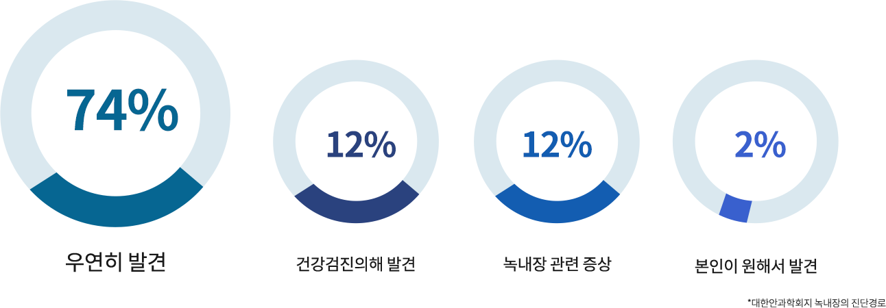

녹내장은 말기에 이르기까지
거의 증상을 느끼지 못하는 경우가 많고,
한번 손상된 시신경은 회복되지 않기 때문에
조기에 진단해서 치료를 시작하는 것이
녹내장으로 인한 실명을 막을 수 있는 유일한 방법입니다.
녹내장 발병 요인
정기적인 안과검진을 통해 조기에 녹내장을 발견하는 것이 무엇보다
중요합니다.

많은 환자분들께서 자각 증상을 느끼고 녹내장 검사를 하기 보다는 우연히
발견하거나 건강 검진에 의해 녹내장을 발견하곤 합니다. 초기에
발견하면
치료가 어렵지 않지만
늦게 발견하거나 자각 증상을 느껴 병원에 내원하면 이미 증상이 많이
진행되었기 때문에 치료하는게 어렵습니다.
그렇기 때문에
정기적인 안과검진을 통해 조기에 녹내장을 발견하여 치료하는 것이
중요합니다.
1DAY 녹내장정밀 검사
에스안과의 녹내장 진단 장비
녹내장은 정밀 검사를 통해 초기에 시신경의문제를 발견하여 원활하게
치료할 수 있도록합니다.
CIRRUS HD-OCT
OPTOS
SLT SOLO
비접촉 안압계
자동시야검사기
안저카메라
포터블 안압계
안산에스안과는10여가지의 정밀 검사를 진행하여 녹내장 증상 및 진행 정도를 파악하여 조기
치료가 가능합니다.
에스안과의 안전한 수술시스템
UPS 무정전 시스템
정전 등 천재지변의 상황이 발생해도
전원을 안전하게 공급할 수 있는
장치를 보유
365일 항온 학습
수술실은 가장 적합한 온도인 섭씨
20도와 최적 습도 40%를
항상 일정하게 유지
완벽한 멸균 시스템
수술실은 항상 완벽한
멸균관리를 진행하며
청결하게 관리
시야가 좁아졌다 느끼면 이미 늦었습니다
조기검진을 통해서 관리하는 것이 중요합니다
녹내장 조기 검사 대상
· 40세 이후 중장년층일 경우 · 고도근시가 있는 경우 · 건강검진 상 안압이 높은 경우 · 가족 중에 녹내장 환자가 있는 경우 · 당뇨, 고혈압, 동맥경화 등 혈관질환이
있는 경우 · 재발성 포도막염이 있는 경우 · 편두통이 지속적으로 반복되는 경우